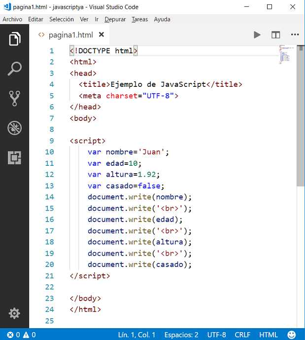
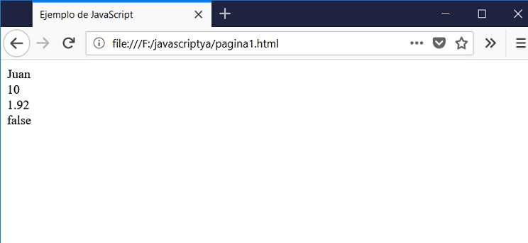

Listado completo de tutoriales
Variables. |
Una variable es un depósito donde hay un valor. Consta de un nombre y pertenece a un tipo (númerico, cadena de caracteres, etc.)
Tipos de variable:
Una variable puede almacenar:
Valores Enteros (100, 260, etc.)
Valores Reales (1.24, 2.90, 5.01, etc.)
Cadenas de caracteres ('Juan', 'Compras', 'Listado', etc.)
Valores lógicos (true,false)
Existen otros tipos de variables que veremos más adelante.
Las variables son nombres que ponemos a los lugares donde almacenamos la información. En JavaScript, deben comenzar por una letra o un subrayado (_), pudiendo haber además dígitos entre los demás caracteres. Una variable no puede tener el mismo nombre de una palabra clave del lenguaje.
Una variable se define anteponiéndole la palabra clave let (en JavaScript antiguo se utiliza la palabra clave var, que veremos hay algunas diferencias importantes):
let dia;
se pueden declarar varias variables en una misma línea:
let dia, mes, anio;
a una variable se la puede definir e inmediatamente inicializarla con un valor:
let edad=20;
o en su defecto en dos pasos:
let edad;
edad=20;
Elección del nombre de una variable:
Debemos elegir nombres de variables representativos. En el ejemplo anterior los nombres dia, mes, anio son lo suficientemente claros para darnos una idea acabada sobre su contenido, una mala elección de nombres hubiera sido llamarlas a, b y c. Podemos darle otros buenos nombres. Otros no son tan representativos, por ejemplo d, m, a. Posiblemente cuando estemos resolviendo un problema dicho nombre nos recuerde que almacenamos el dia, pero pasado un tiempo lo olvidaríamos.
Impresión de variables en una página HTML.
Para mostrar el contenido de una variable en una página utilizamos el objeto document y llamamos a la función write.
En el siguiente ejemplo definimos una serie de variables y las mostramos en la página:
<!DOCTYPE html>
<html>
<head>
<title>Ejemplo de JavaScript</title>
<meta charset="UTF-8">
</head>
<body>
<script>
let nombre = 'Juan';
let edad = 10;
let altura = 1.92;
let casado = false;
document.write(nombre);
document.write('<br>');
document.write(edad);
document.write('<br>');
document.write(altura);
document.write('<br>');
document.write(casado);
</script>
</body>
</html>
Cuando imprimimos una variable, no la debemos disponer entre simples comillas (en caso de hacer esto, aparecerá el nombre de la variable y no su contenido)
Los valores de las variables que almacenan nombres (es decir, son cadenas de caracteres) deben ir encerradas entre comillas simples o dobles. Los valores de las variables enteras (en este ejemplo la variable edad) y reales no deben ir encerradas entre comillas. Cada instrucción finaliza con un punto y coma (luego veremos que en muchos casos se puede obviar, pero cuando comenzamos a aprender a programar no es conveniente ya que se nos pueden presentar errores difíciles de detectar)
Las variables de tipo boolean pueden almacenar solo dos valores: true o false.
El resultado al visualizar la página debe ser 4 líneas similares a éstas:
Juan 10 1.92 false
Es decir que se muestran los contenidos de las 4 variables. Una variable es de un tipo determinado cuando le asignamos un valor:
let edad=10;
Es de tipo entera ya que le asignamos un valor entero.
let nombre='juan';
Es de tipo cadena (string)
Para mostrar el contenido de una variable en una página debemos utilizar el método 'write' que pertenece al objeto document.
Recordemos que el lenguaje JavaScript es sensible a mayúsculas y minúsculas y no será lo mismo si tipeamos:
Document.Write(nombre);
Esto porque no existe el objeto 'Document' sino el objeto 'document' (con d minúscula), lo mismo no existe el método 'Write' sino 'write', este es un error muy común cuando comenzamos a programar en JavaScript
Si queremos probar esta página en forma local en nuestra computadora debemos utilizar un editor de texto yo recomiendo Visual Studio Code, luego puede desarrollar un tutorial de este editor en VS Code Ya
Escribimos la página web en el editor de texto:
Y luego lo podemos abrir:
Por el momento si no quiere instalar un editor de texto puede hacer las pruebas en este mismo sitio.